-
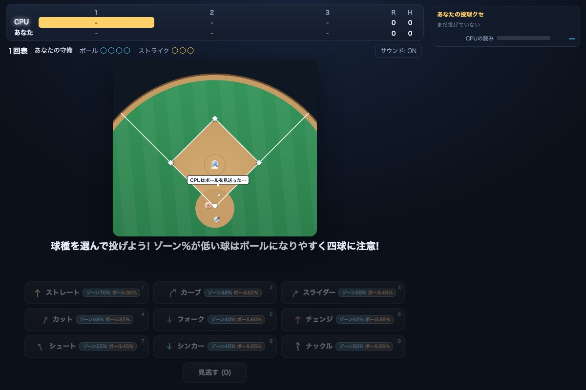
GAME9球種を読め!
3回勝負の野球ゲーム。9球種と見逃しの駆け引き、カウント制、タイミングバーで長打を狙え。配球メモと得意/苦手バッジでCPUのクセを読んで打ち崩し、守備はゾーン率を見極めて四球に注意!
遊ぶ -
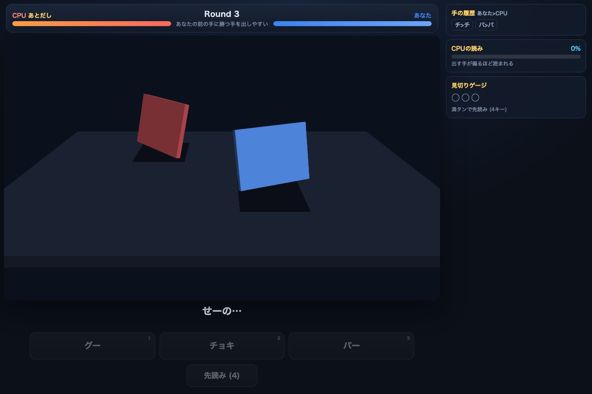
GAME手を読め!
心理戦じゃんけんゲーム。連勝ボーナスと先読み必殺の読み合い、見切りゲージを満タンにしてCPUの手を見てから選べ。手の履歴と「CPUの読み」メーターを見ながら、出しグセを読まれないように駆け引きを制せ!
遊ぶ -
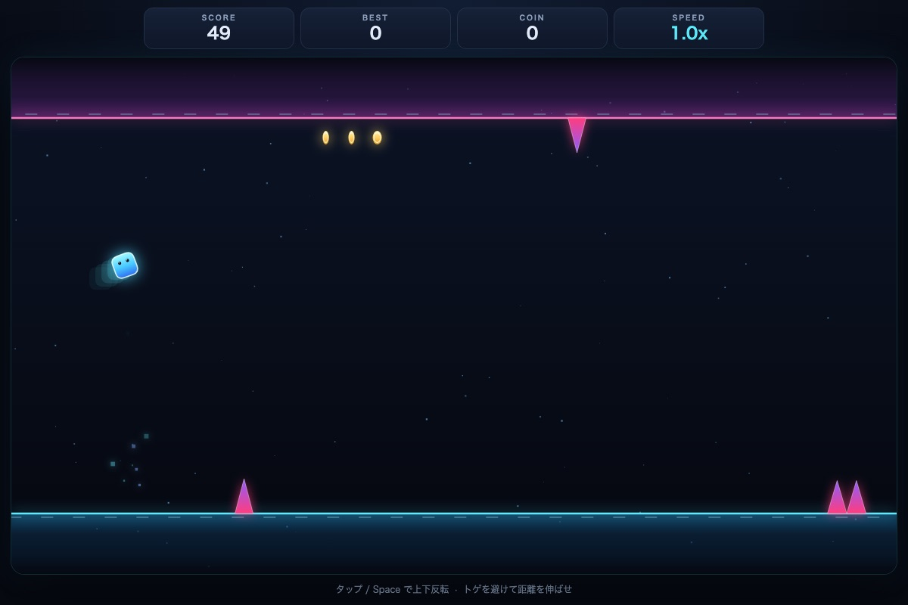
GAME重力フリップ
タップで上下の重力を反転してトゲを避ける1ボタン2Dアクション。だんだん速くなるステージでコインを集め、自己ベストの距離を目指せ!
遊ぶ -
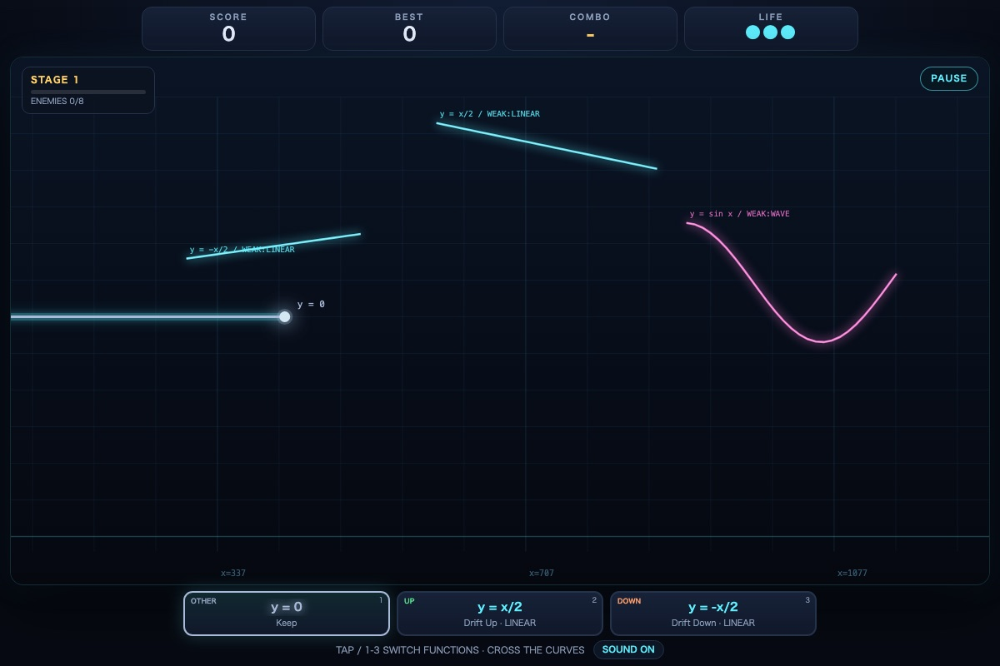
GAMEグラフクロス
xが自動で進むグラフの上で関数を切り替え、自分の曲線を敵の曲線に交差させて大爆発を起こす2Dアクション。上昇/下降/その他のジャンルから3つ選ぶデッキ、累乗(x^p)・波(sin/cos/三角/角丸/減衰)・指数/対数/S字/山/減速下降の関数ビルダーと2関数の合成カード、リアルタイム軌道プレビューと合成後プレビュー、角度・弱点・連続MULTI、アイテムで追加される非対称グラフ、ボスとステージクリア、軌道プレビュー付きの同ジャンル関数入れ替え3択と強化3択、敵撃破時に縦ビームで撃ち抜くプリズムクロス、アイテム磁石・リバイブ・コンボガード・ボスブレイカー、関数スロットの3択追加、ローカル関数ガチャとレアリティ、3フェーズボスとレーザー/弾幕攻撃、STAGE10の最終ボスとエンディング、装甲/分裂/ジャマーの特殊敵、1ラン1回の救済チェンジ、図解付き3ステップのチュートリアル、ステージ開始時点からやり直せるリトライ、ライフ無限のストレス解消モードを搭載。BGMと効果音、スマホのタップ操作にも対応!
遊ぶ -
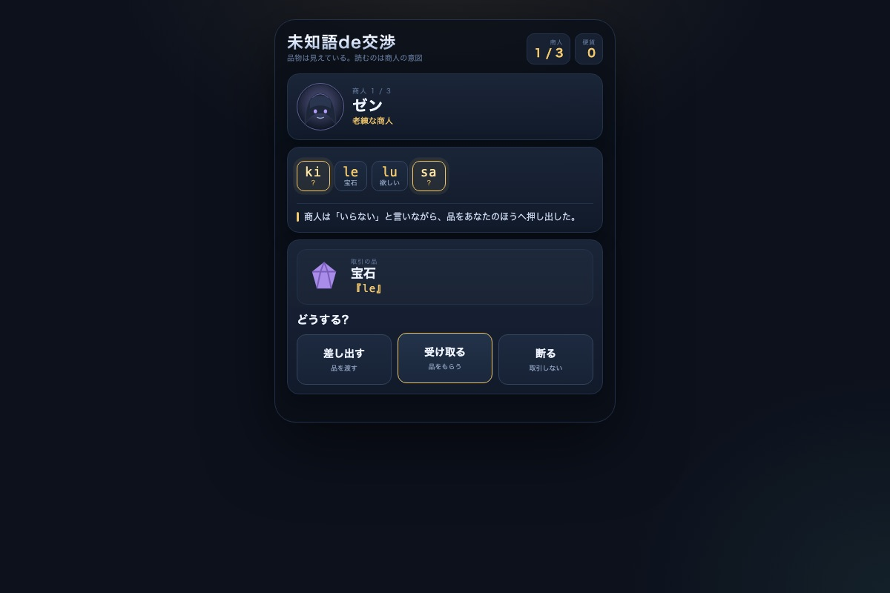
GAME未知語de交渉
品物は見えている。商人の短い文に潜む文法語と意図を読み、差し出す・受け取る・断るを選ぶスマホ向け言語交渉ゲーム。当たれば+10硬貨、外れれば+3硬貨。迷ったら2硬貨で意味を確認。3人目は言葉としぐさが食い違う。最後は契約書の主語を読んで署名/拒否。3〜5分。
遊ぶ -
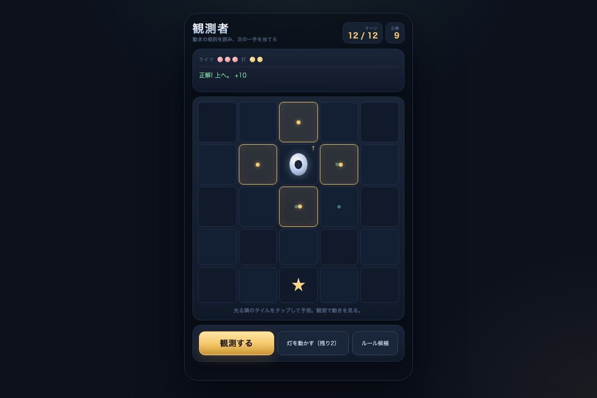
GAME観測者
敵の動きの隠れた規則を観測し、次の一手を予測するスマホ向け推理ゲーム。観測・予測・灯を動かす実験で6つの候補を絞る。外すとライフが減り、規則が変わる。12ターンで何回当てられるか。約5分。
遊ぶ -
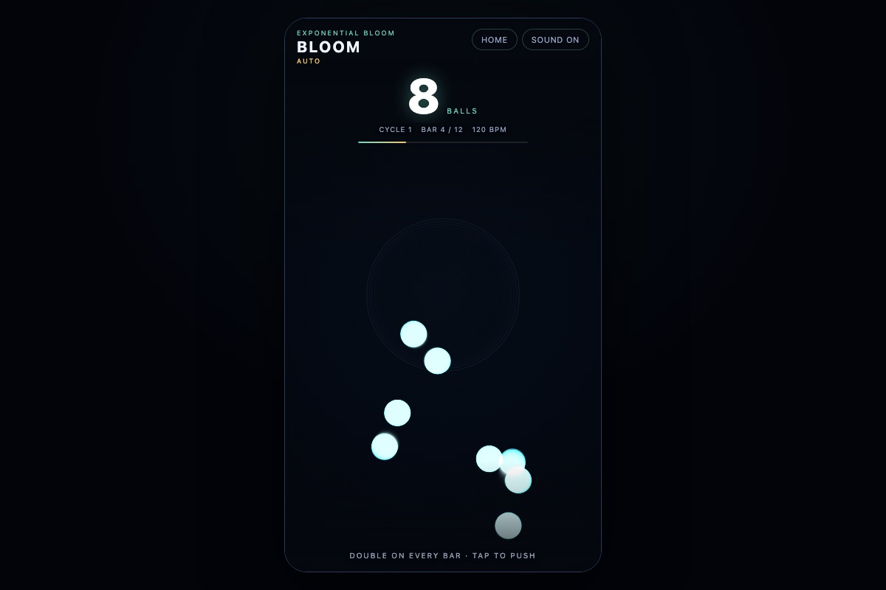
GAMEBLOOM
ボールが2,048まで倍々に増えるAUTO、上部ラインで2個に増えるFRAME、20色の球がギミックを抜けて最後の1球を決めるノータップRACE、20球の能力差と予想を楽しむ積み木レースRACE 3Dの4モードを載せた縦画面オーディオビジュアル。AUTO/FRAMEはタップで押し返し。120 BPMのプロシージャル音楽。
遊ぶ -
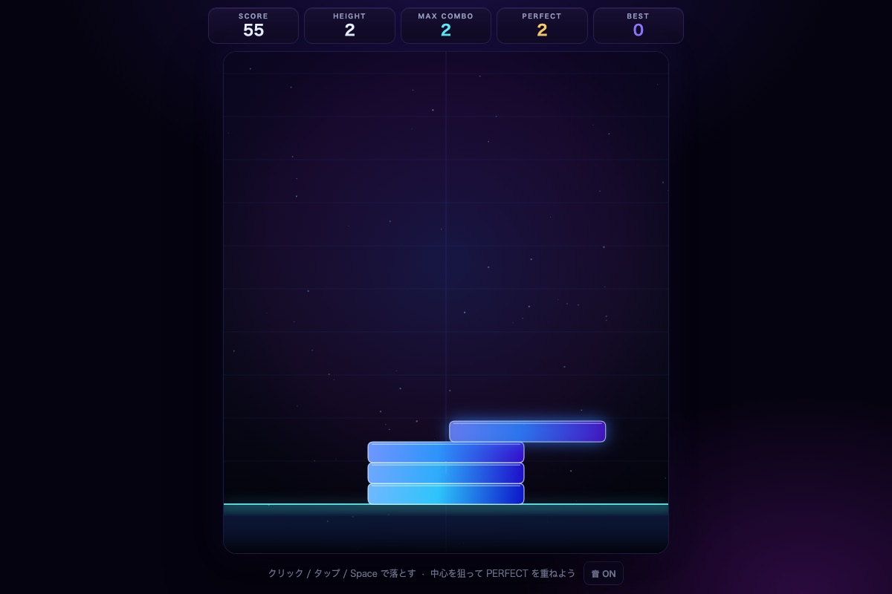
GAMEネオンスタック
1ボタンで遊ぶネオン積み上げアーケード。左右に往復するブロックを落とし、重なった幅だけが残る。PERFECTで幅キープ+コンボ、3連続で幅回復。5階ごとのコア、10階ごとのバイオーム、BGMのBEATボーナス、日替わりチャレンジ、BGM/効果音つき。
遊ぶ -
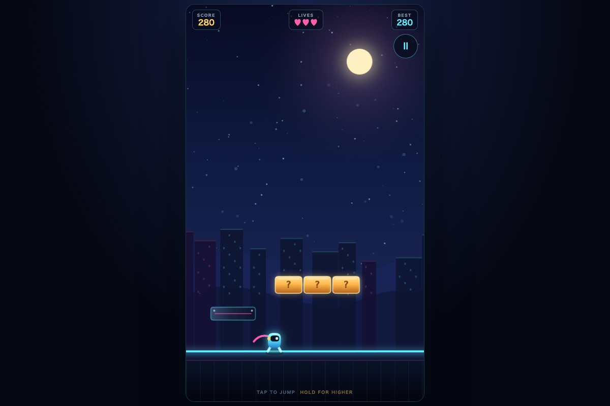
GAMEジャンプラッシュ
自動で走るヒーローをタップ/押しっぱなしでジャンプさせ、4種類の敵を踏み越えて城を目指すスマホ縦画面の横スクロールアクション。左右に歩く敵、跳ねる敵、空中を漂う敵、弾を撃つ敵、下から壊せる/壊せないブロック、穴、3ライフ、旗ポールから城へ入るクリア演出、距離・踏み・ブロック・タイムのスコア、ベスト保存つき。
遊ぶ -
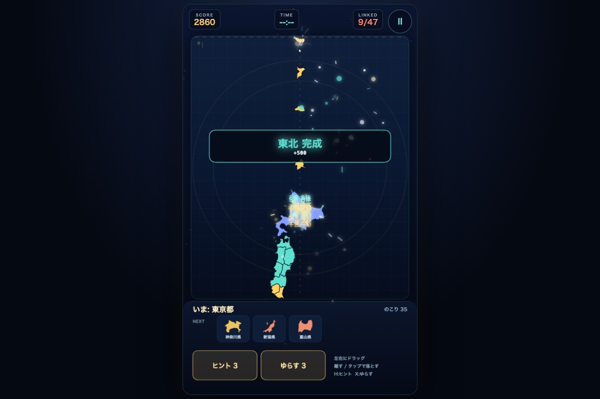
GAMEけんつなぎ
47都道府県を箱に落とし、隣り合う県が触れると地図どおり合体する落ちものパズル。県は重力で積もり、陸続きと橋でつながる。47県を落としたら60秒以内に日本列島を完成させ、箱あふれと時間切れを避けてスコアを伸ばす。ヒント3回、ゆらす3回、ベストスコアと最速タイム保存つき。
遊ぶ -
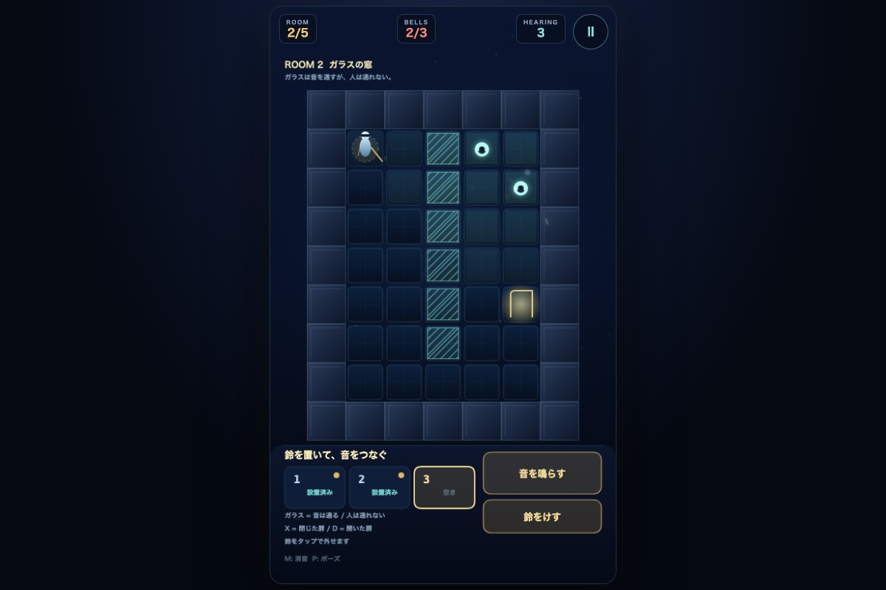
GAME音の家
目が見えない住人に鈴の音で道を教える音響パズル。壁と閉じた扉は音を遮り、ガラスは音だけ通す。部屋に最大3つの鈴を置き、音が届く範囲につないで出口へ導く全5室。開いた扉と閉じた扉、鈴の順番、音の波紋、スマホ操作対応。
遊ぶ